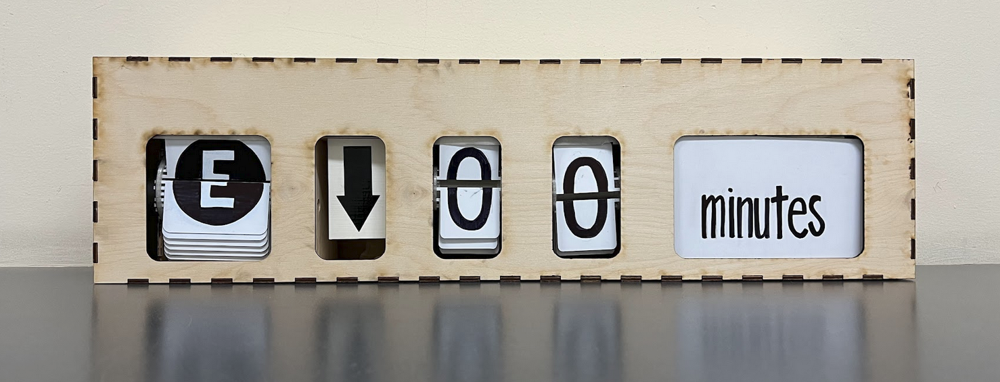

Projects
The Subway Clock
Python, Google Maps API, Google Firebase
This was a group school project I did my freshman year.
The central idea of this project was to make subway commutes easier. The user could log in to our website and create an account.
Then they could plug in their home address and destination address.
Our server would calculate the closest station and the next train and display how long until the next train would arrive.
We also had a feature so that if you had to be at work at say 9 AM, the clock would tell you the time until the train that would get you there right on time.

It was part of our school's general engineering program to help students explore different fields of engineering.
For me, it was an excellent way to explore electrical engineering and confirm I loved computer science.
I spearheaded the electrical engineering component which I had zero previous experience in and manufacturing.
(I got to use a laser cutter. I know. Very cool.)
It was an excellent opportunity to learn how to teach myself new technical skills outside of school.
I also helped develop our code that worked with the GoogleMapsAPI to figure out train times,
and GoogleMaps Firebase to store user login information.
Website Code
Clock + Server Code
Airline Website
HTML, CSS, JS, Python Flask, MySQL
This was a school project I did for my Databases course. I developed a website that worked with a local database on XMAPP.
The website featured a login page for customers and staff.
Customers could purchase flights, rate and comment on their past flights, and view membership information.
Staff could create new flights, add new planes, schedule plane maintenance, and view flight ratings.
This project was my first attempt at full-stack development and front-end work. The code is unpolished but functional.
This project also helped me develop my ability to use Python Flask.
See the code here!
To-Do Application
C++
I'm still sort of working on this one. I just want to show off the fact I can use basic C++.
For now, it is a terminal-based application. I'm currently working on learning OpenGL
(projects for that are in
CS3113
on my GitHub) and once I do, I hope to create a cute UI for this project.
This Website!
HTML, CSS, JS
This website was really just a fun and productive attempt at front-end development, something I've had zero schooling in.
Most of my education has been in back-end development so I wanted to work on my full-stack development skills.
I learned a bit of JavaScript to build the typing animation.
The rest is just simple HTML and CSS as you can probably tell from the bare-bones appearance.